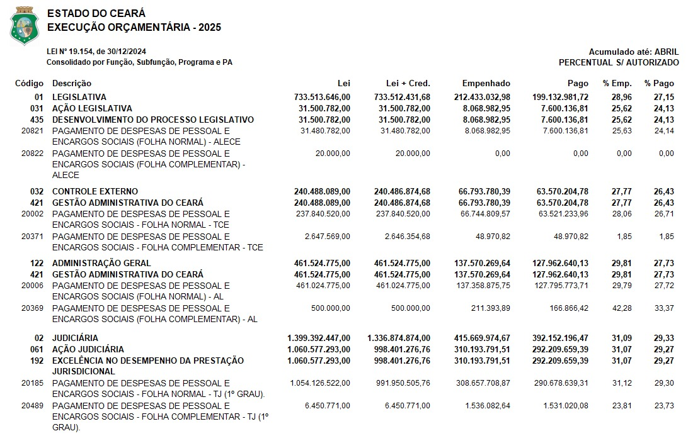
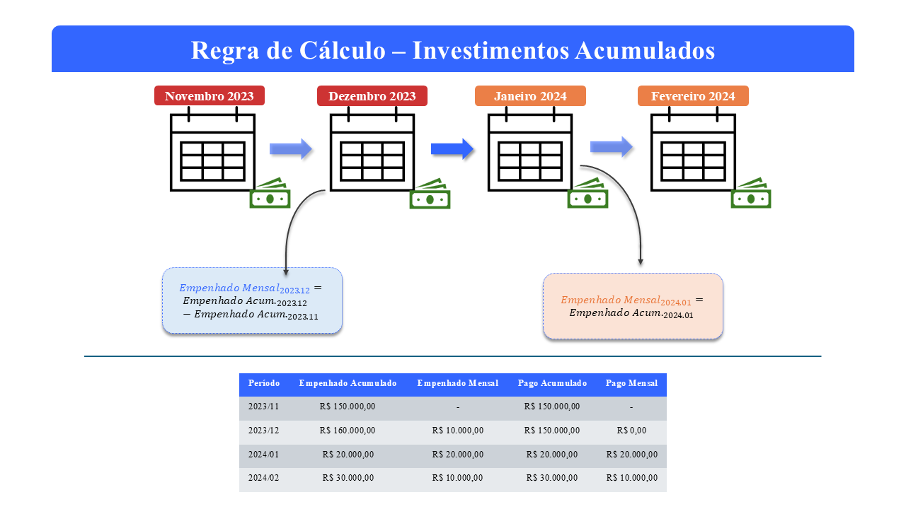

Processamento de Dados - Investimentos Públicos por Função (Sefaz-CE)
Author
Paulo Icaro
Objetivo e Estrutura dos Dados
A rotina desenvolvida visa realizar realizar a devida padronização nos dados de investimentos por função que municiam os modelos trabalhados no projeto.
A imagem a seguir representa a estrutura dos dados disponibilizados em cada uma das planilhas baixadas na página do SIOF. Cada planilha representa um Tipo de investimento: Corrente, Pessoal, Equipamentos, Obras e Total. Em termos de informações efetivas, cada planilha contém oito campos. Destes, as colunas interesse são:
Código
Descrição
Empenhado
Pago
No campo Código, os investimentos estão classificados em Função, Subfunção, Programa e Projeto/Atividade. Para fins da pesquisa, apenas a primeira classificação interessa.
Levando em conta os pontos mencionados e que os dados são cumulativos, o objetivo dessa rotina é coletar as informações referente a Função considerando somente os valores de investimentos Empenhado e Pago. Os tópicos a seguir detalham cada etapa da rotina.

Bibliotecas e Arquivos na Pasta
Para executação dessa rotina, duas bibliotecas foram utilizadas:
pandas: bilbioteca para manipulação, limpeza e análise de dados.
os: biblioteca padrão do python que permite interagir com o sistema operacional.
Importadas as devidas bibliotecas, os arquivos que serão trabalhados são devidamente mapeados por meio da função listdir da biblioteca os. Nessa etapa também é criado um dataframe, dataset_full, que irá armazenar todo o conjunto de dados final.
# =================== ## === Bibliotecas === ## =================== #import pandas as pdimport os# ========================= ## === Arquivos de Dados === ## ========================= #folder_files = os.listdir('Dataset/Investimentos_Funcao/')dataset_full = pd.DataFrame()# --- Prints --- #print(*folder_files[0:10], sep ='\n')
Nesta etapa, uma estrutura loop é utilizada realizar a manipulação da rotina, onde cada etapa do tratamento é executado em cada conjunto de informações contidos nas planilhas.
Na leitura dos arquivos, somente as colunas de interesse são coletadas. Além disso, toda e qualquer linha nula é removida desse conjunto. Esse conjunto de dados remodelado recebe o nome de dataset.
Ao dataset são acrescidos quatro novos campos representando, respectivamente, i) periodo, ii) tipo de investimento, iii) ano, e iv) mês. Tais informações são extraídas justamente do nome de cada arquivo processado1.
Após esses tratamentos iniciais, algumas linhas de comando são responsáveis por duas partes cruciais do procedimento. Primeiramente, são identificas e filtradas somentes as linhas referente a cujo código corresponde a Função. Dado a estrutura de looping, a segunda parte diz respeito a regra de acumulação das informações. Cada planilha que passa pelo procedimento rerpresenta um dataset que contribui para um dataframe final chamado dataset_full contendo todas as informações por ano, mês e tipo de investimento e função.
# ============================== ## === Processamento de Dados === ## ============================== #for x inrange(len(folder_files)):# --- Leitura de arquivos --- # dataset = pd.read_excel(io ='Dataset/Investimentos_Funcao/'+ folder_files[x], header =10, usecols='C, F, K, N', dtype = {'Código':str})# --- Removendo valores vazios --- # dataset = dataset.dropna() # --- Adicionando colunas --- # dataset = dataset.assign(periodo = folder_files[x][6:10] +'/'+ folder_files[x][2:5], tipo = folder_files[x][11:16], ano = folder_files[x][6:10], mes = folder_files[x][2:5]) # --- Algumas substituições --- # replacements = {'JAN':'01', 'FEV':'02', 'MAR':'03', 'ABR':'04', 'MAI':'05', 'JUN':'06', 'JUL':'07', 'AGO':'08', 'SET':'09', 'OUT':'10', 'NOV':'11', 'DEZ':'12'}for old, new in replacements.items(): dataset['mes'] = dataset['mes'].replace(old,new)# --- Identificando linhas correspondentes a Função --- # function_flag = dataset['Código'].str.len() ==2# --- Selecionando somente as linhas que se encaixam na condição anterior --- # dataset = dataset[function_flag]# --- Reordenando e renomeando --- # dataset = dataset.reindex(columns = ['periodo', 'ano', 'mes', 'tipo', 'Código', 'Descrição', 'Empenhado', 'Pago']) dataset.rename(columns = {'Descrição':'funcao', 'Código':'codigo', 'Empenhado':'empenhado', 'Pago':'pago'}, inplace =True)# --- Empilhando dataset's no dataset_full --- #if x ==0: dataset_full = datasetelse: dataset_full = pd.concat([dataset_full, dataset])print(dataset_full.head(10))
Nessa seção da rotina, o objetivo principal é chegar ao investimento efetivo que se deu em determinado período. Dessa forma, a ideia é sempre tomar a diferença entre os periodos adotando a seguinte regra:
É interessante ressaltar que para chegar nesse cálculo o dataframe dataset_full precisa estar devidamente ordenado, evitando assim variações entre períodos, tipos de investimento e mesmo funções diferentes. Em vista dessa necessidade, a função sort_values desempenha esse papel de ordenamento, onde a seguinte ordem é adotada:
Função
Tipo
Ano
Mês
No dataset_full duas novas colunas representando o investimento mensal, empenhado_mensal e pago_mensal, são adicionadas, ao passo que os campos empenhado e pago passam a se chamar empenhado_acumulado e pago_acumulado.
Para valores que representam o mês de janeiro, uma regra em looping foi gerada. Uma vez que os dados estão devidamente ordenados e não há possibilidade alguma de conflito de informações, ao comparar a linha atual com a anterior, se a diferença entre os meses for superior a 1, então tem-se a confirmação de um cenário onde a linha atual representa janeiro e a linha anterior representa dezembro do ano anterior. Nesse caso, a rotina entende que o valor mensal é o mesmo valor acumulado. Nos demais cenários a regra padrão é adotada. O infográfico a seguir ajuda a compreender a regra adotada.

# ======================================= ## === Ajustes para Dados Cumulativos === ## ======================================= ## --- Ordenamento --- #dataset_full = dataset_full.sort_values(by = ['funcao', 'tipo', 'ano', 'mes']).reset_index(drop =True)# --- Ajuste nos dados cumulativos --- #dataset_full['empenhado_mensal'] = dataset_full['empenhado'] - dataset_full['empenhado'].shift(1) # Inserting adjusted valuesdataset_full['pago_mensal'] = dataset_full['pago'] - dataset_full['pago'].shift(1) # Inserting adjusted values# --- Looping de ajuste para valores com datas truncadas --- #for i inrange(len(dataset_full)):if i ==0: dataset_full.loc[0, 'empenhado_mensal'] = dataset_full.loc[0, 'empenhado'] dataset_full.loc[0, 'pago_mensal'] = dataset_full.loc[0, 'pago']if i !=0andint(dataset_full.loc[i, 'mes']) -int(dataset_full.loc[i-1, 'mes']) !=1: dataset_full.loc[i, 'empenhado_mensal'] = dataset_full.loc[i, 'empenhado'] dataset_full.loc[i, 'pago_mensal'] = dataset_full.loc[i, 'pago']# --- Renomeando colunas --- #dataset_full.rename(columns = {'empenhado':'empenhado_acumulado', 'pago':'pago_acumulado'}, inplace =True)# --- Prints --- #print(dataset_full.head(10))
Após todo o tratamento aplicado aos dados, a base final, dataset_full, recebe um último tratamento antes dos dados serem finalmente armazenados em um arquivo excel (.xlsx). A base de dados final que até então continha 10 colunas passa por uma espécie de “verticalização”2 das informações. As colunas de valores agora são dividídas em duas colunas. Enquanto os valores em si se alinham sob uma única coluna nomeada valor, uma coluna nomeada categoria é gerada para representar a categoria de investimento que está sendo tratada. Os campos período, ano, mês, tipo, código e função permanecem como variáveis categóricas.
Ao final da rotina é realizada uma limpeza no enviroment mantendo somente o dataframe final para visualização.
Tal fato só é possível devido a padronização adotada para o nome dos arquivos. Para distinguir dos investimentos por programa, os arquivos recebem o prefiro F_. Por exemplo, para os investimentos em Equipamentos no período de Março de 2020, teria-se F_MAR_2020_EQUIP.xlsx.↩︎
Esse procedimento é realizado por meio da função melt.↩︎